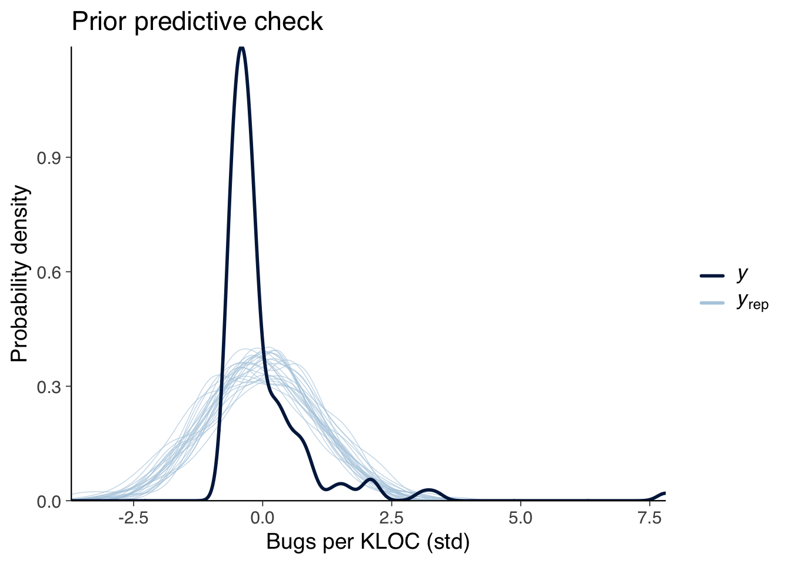
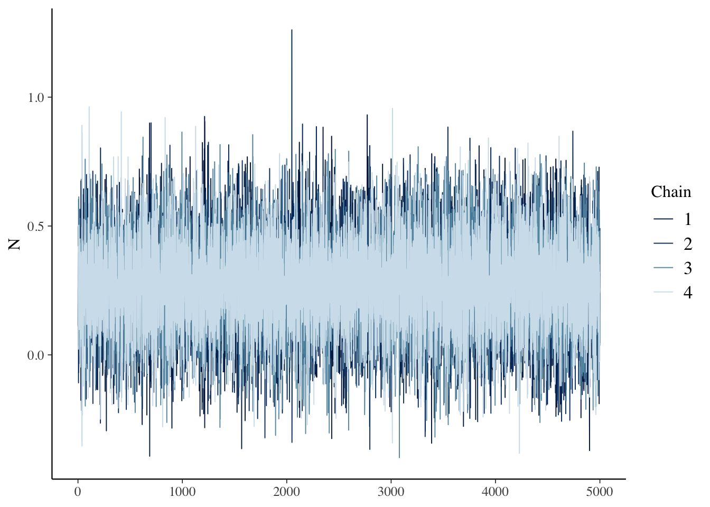
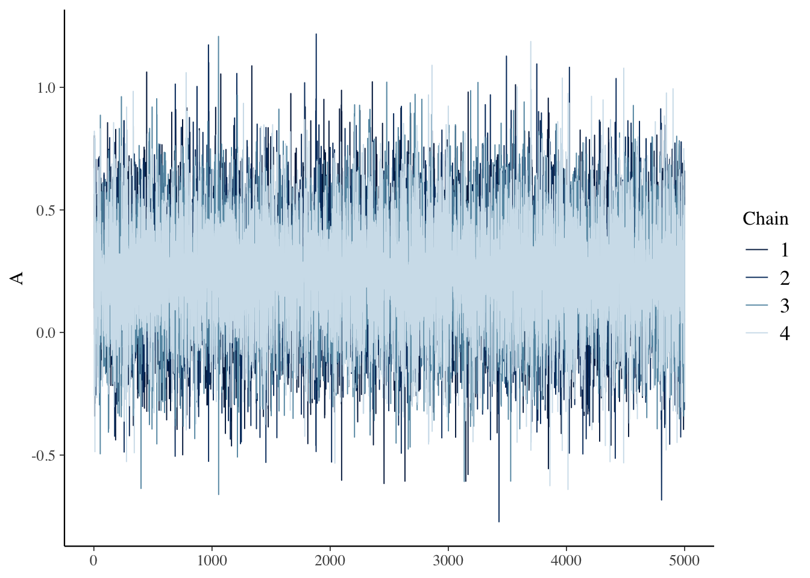
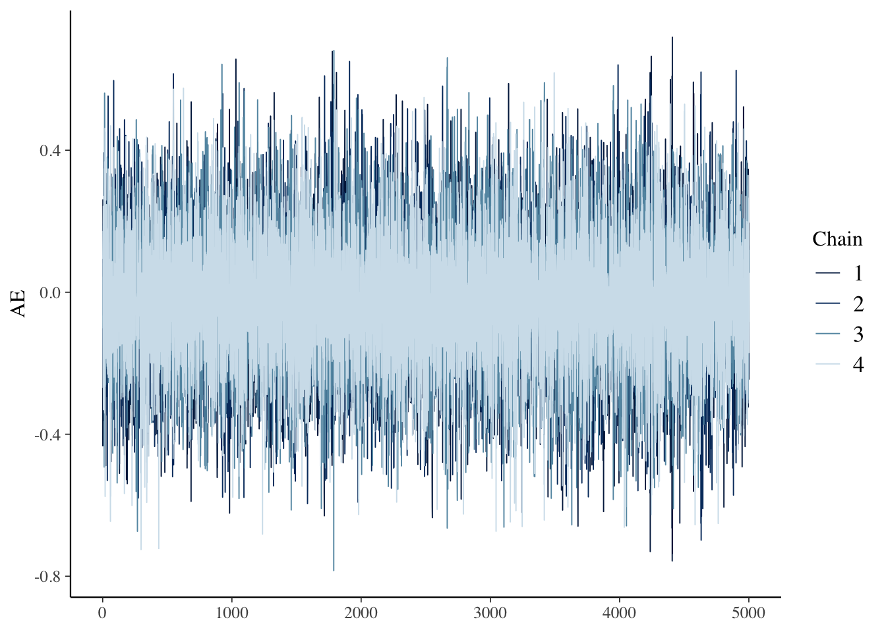
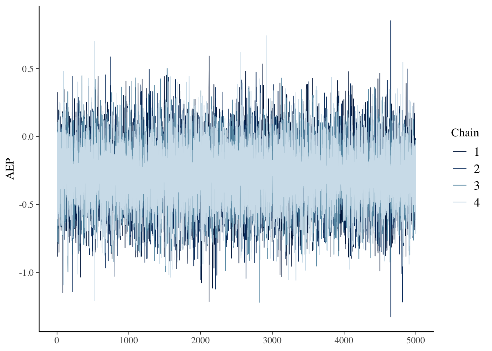
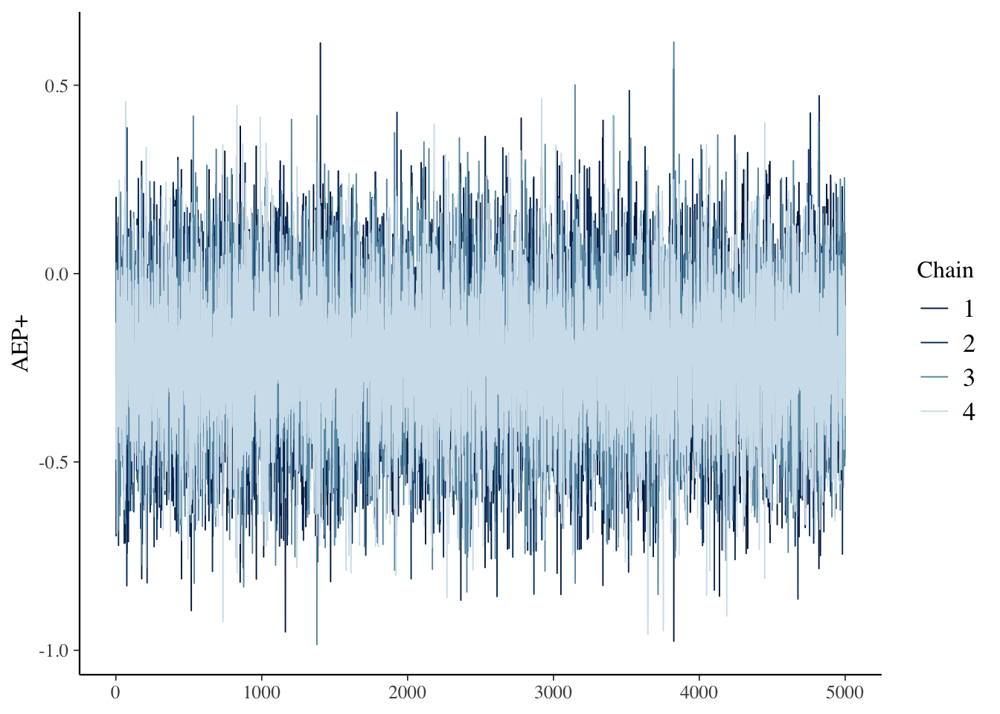
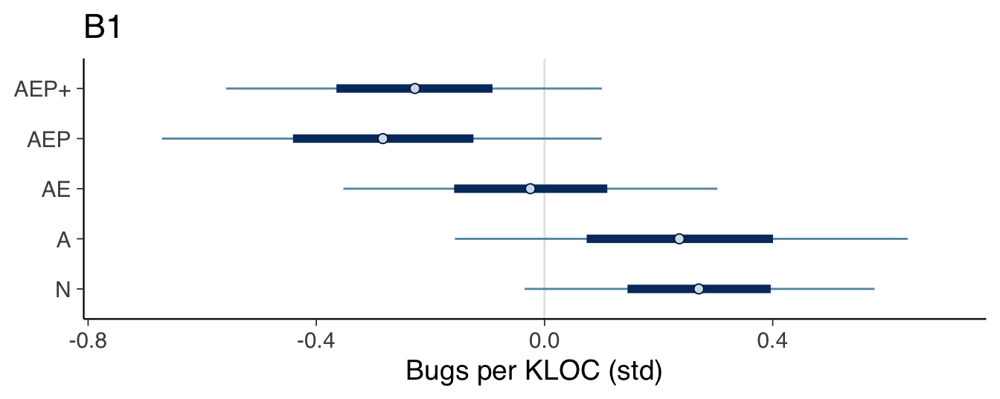
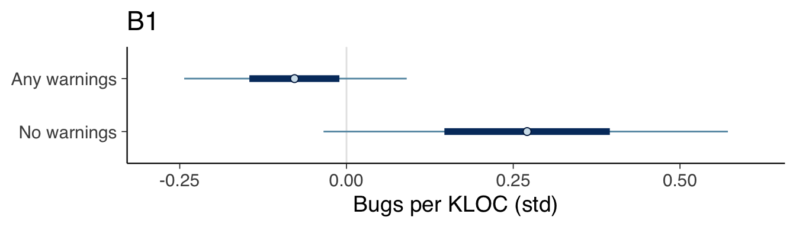

This section covers the analysis relating to the bugs metric.
model_seed <- 20230303 # 2023 March 3
create_bugs_data <- function(data) {
list(
bugs_kloc_std=scale(data$bugs_kloc),
contributors_std=scale(data$contributors),
stars_std=scale(data$stars),
size_std=scale(data$loc),
files_std=scale(data$files),
age_std=scale(get_age(data$created_at))
)
}
data <- create_bugs_data(df)
data$category <- factor(df$category)fit_model_b1 <- function(name, data) {
fit_model(name,
"bugs_kloc_std ~ 0 + category",
c(
prior(normal(0, 1), class=b),
prior(exponential(1), class=sigma)
),
data,
model_seed)
}
b1 <- fit_model_b1("b1", data)fit_model_b2 <- function(name, data) {
fit_model(name,
"bugs_kloc_std ~ 0 + category + contributors_std",
c(
prior(normal(0, 1), class=b),
prior(normal(0, 1), class=b, coef="contributors_std"),
prior(exponential(1), class=sigma)
),
data,
model_seed)
}
b2 <- fit_model_b2("b2", data)fit_model_b3 <- function(name, data) {
fit_model(name,
"bugs_kloc_std ~ 0 + category + stars_std",
c(
prior(normal(0, 1), class=b),
prior(normal(0, 1), class=b, coef="stars_std"),
prior(exponential(1), class=sigma)
),
data,
model_seed)
}
b3 <- fit_model_b3("b3", data)fit_model_b4 <- function(name, data) {
fit_model(name,
"bugs_kloc_std ~ 0 + category + age_std",
c(
prior(normal(0, 1), class=b),
prior(normal(0, 1), class=b, coef="age_std"),
prior(exponential(1), class=sigma)
),
data,
model_seed)
}
b4 <- fit_model_b4("b4", data)fit_model_b5 <- function(name, data) {
fit_model(name,
"bugs_kloc_std ~ 0 + category + contributors_std + stars_std",
c(
prior(normal(0, 1), class=b),
prior(normal(0, 1), class=b, coef="contributors_std"),
prior(normal(0, 1), class=b, coef="stars_std"),
prior(exponential(1), class=sigma)
),
data,
model_seed)
}
b5 <- fit_model_b5("b5", data)fit_model_b6 <- function(name, data) {
fit_model(name,
"bugs_kloc_std ~ 0 + category + contributors_std + stars_std + age_std",
c(
prior(normal(0, 1), class=b),
prior(normal(0, 1), class=b, coef="contributors_std"),
prior(normal(0, 1), class=b, coef="stars_std"),
prior(normal(0, 1), class=b, coef="age_std"),
prior(exponential(1), class=sigma)
),
data,
model_seed)
}
b6 <- fit_model_b6("b6", data)b1 <- add_criterion(b1, criterion="loo", moment_match=TRUE)
b2 <- add_criterion(b2, criterion="loo", moment_match=TRUE)
b3 <- add_criterion(b3, criterion="loo", moment_match=TRUE)
b4 <- add_criterion(b4, criterion="loo", moment_match=TRUE)
b5 <- add_criterion(b5, criterion="loo", moment_match=TRUE)
b6 <- add_criterion(b6, criterion="loo", moment_match=TRUE)
print(loo_compare(b1, b2, b3, b4, b5, b6, criterion="loo"), simplify=FALSE)## elpd_diff se_diff elpd_loo se_elpd_loo p_loo se_p_loo looic se_looic
## b1 0.0 0.0 -194.9 40.8 22.0 16.9 389.8 81.6
## b4 -1.0 0.1 -196.0 40.8 22.8 17.2 391.9 81.6
## b2 -1.1 0.4 -196.0 41.1 22.6 17.0 392.0 82.3
## b3 -1.6 1.1 -196.6 41.7 23.9 17.6 393.1 83.4
## b5 -2.2 0.9 -197.1 41.3 23.8 17.2 394.2 82.7
## b6 -3.0 0.7 -197.9 41.0 24.4 17.3 395.8 82.0plot_priors(b1, "Bugs per KLOC (std)")
plot_caterpillar(b1, "b_category1", "N")
plot_caterpillar(b1, "b_category2", "A")
plot_caterpillar(b1, "b_category3", "AE")
plot_caterpillar(b1, "b_category5", "AEP")
plot_caterpillar(b1, "b_category7", "AEP+")
summary(b1)## Family: gaussian
## Links: mu = identity; sigma = identity
## Formula: bugs_kloc_std ~ 0 + category
## Data: data (Number of observations: 127)
## Draws: 4 chains, each with iter = 10000; warmup = 5000; thin = 1;
## total post-warmup draws = 20000
##
## Population-Level Effects:
## Estimate Est.Error l-95% CI u-95% CI Rhat Bulk_ESS Tail_ESS
## category1 0.27 0.19 -0.10 0.64 1.00 43395 14610
## category2 0.24 0.24 -0.23 0.71 1.00 42627 14967
## category3 -0.02 0.20 -0.41 0.37 1.00 40363 13926
## category4 0.37 0.45 -0.51 1.25 1.00 45221 14595
## category5 -0.28 0.23 -0.74 0.17 1.00 44279 14509
## category6 -0.20 0.33 -0.86 0.45 1.00 42461 13622
## category7 -0.23 0.20 -0.62 0.16 1.00 40914 14964
## category8 0.47 0.71 -0.91 1.86 1.00 41707 13361
## category9 -0.02 0.71 -1.40 1.40 1.00 44840 14983
## category10 -0.29 0.50 -1.26 0.70 1.00 43875 14189
## category11 -0.10 0.71 -1.49 1.29 1.00 40663 15519
##
## Family Specific Parameters:
## Estimate Est.Error l-95% CI u-95% CI Rhat Bulk_ESS Tail_ESS
## sigma 1.00 0.07 0.89 1.14 1.00 33522 15375
##
## Draws were sampled using sampling(NUTS). For each parameter, Bulk_ESS
## and Tail_ESS are effective sample size measures, and Rhat is the potential
## scale reduction factor on split chains (at convergence, Rhat = 1).print(create_natural_scale_summary_df(b1, df$bugs_kloc))## Mean SD 0.05 CI 0.95 CI
## N 0.97 0.88 0.64 1.31
## A 0.94 0.94 0.50 1.37
## AE 0.65 0.89 0.29 1.00
## AEP 0.37 0.92 -0.05 0.78
## AEP+ 0.42 0.89 0.07 0.78plot_intervals_of_major_categories(b1) +
labs(title="B1", x="Bugs per KLOC (std)")
data_binary_factor <- create_bugs_data(df)
data_binary_factor$category <- factor(uses_warnings(df$category))
b1_binary_factor <- fit_model_b1("b1_factor_uses_warnings", data_binary_factor)
plot_intervals_of_categories(b1_binary_factor) +
labs(title="B1", x="Bugs per KLOC (std)") +
scale_y_discrete(labels=c(
"b_category1"="No warnings",
"b_category2"="Any warnings"
))
Albin Johansson and Carl Holmberg, Chalmers University of Technology, 2023